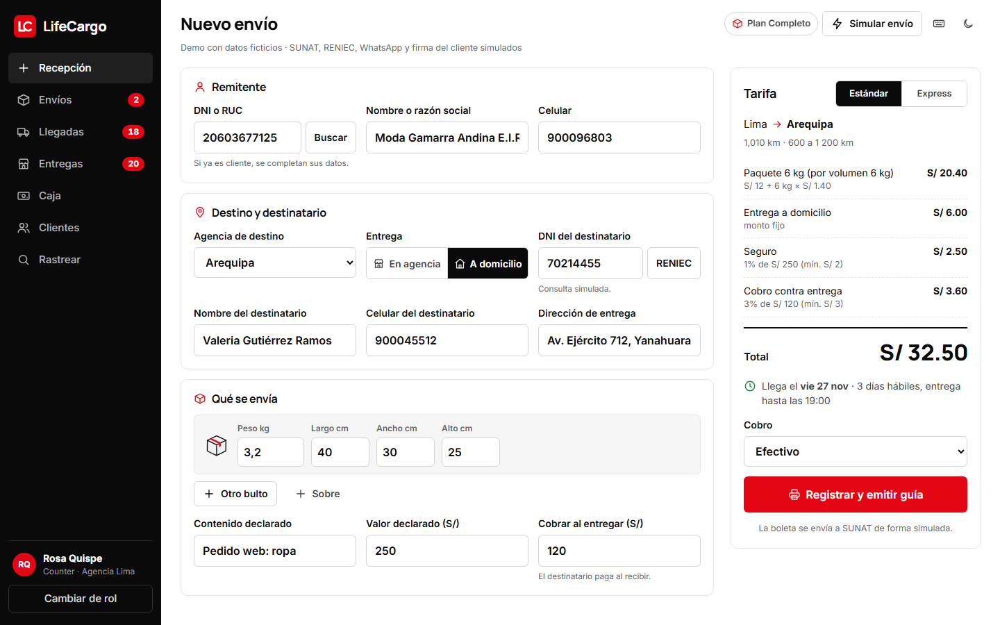
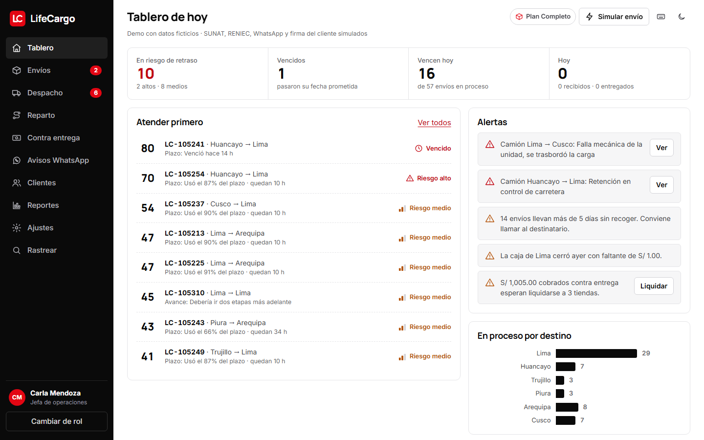
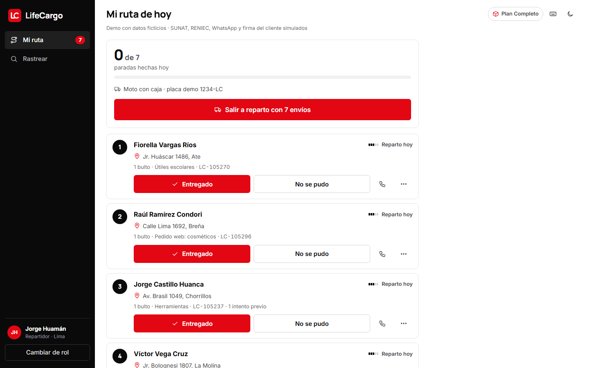
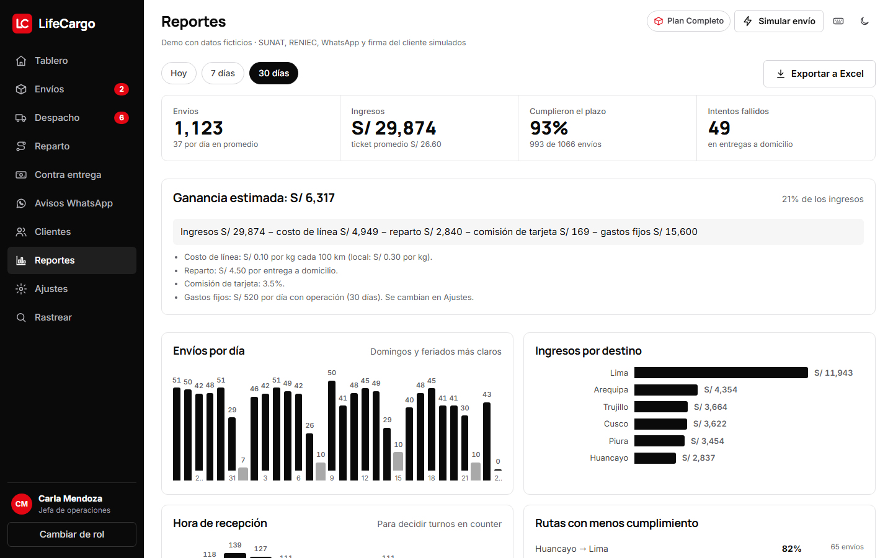

Sepa qué envío se va a retrasar antes de que su cliente llame.
LifeCargo es el sistema para empresas de courier y encomiendas en Perú. Recibe en counter, despacha camiones, reparte a domicilio y le da a cada envío un puntaje de riesgo de 0 a 100 que dice qué atender primero y por qué.
Demo con datos ficticios de una empresa inventada. No necesita registrarse.
En un courier, el problema rara vez es el camión. Es no saber.
- El cliente llama tres veces preguntando dónde está su paquete, y en counter tienen que buscar en el cuaderno o llamar a la otra agencia.
- El retraso se descubre tarde: cuando el destinatario reclama, el envío ya lleva dos días detenido en una agencia.
- La caja no cuadra con lo que se recibió, y los cobros contra entrega de las tiendas online se liquidan a ojo.
- Nadie sabe cuánto deja cada ruta: se cobra por costumbre, no por peso real, volumen ni distancia.
Cómo funciona un día con LifeCargo
Capturas reales del sistema de demostración.




Tres planes, o arme el suyo
Cada plan se puede probar completo ahora mismo. La cotización depende de sus agencias y usuarios, por eso la conversamos por WhatsApp.
¿Cuántas horas se van en contestar "dónde está mi envío"?
Calculadora de estimación. Cambie los valores por los de su courier.
Qué es real y qué es simulado en este demo
- Real: el cálculo de tarifas, el puntaje de riesgo, el flujo de cada rol, la caja con arqueo, la impresión de guías y manifiestos, los reportes y la exportación a Excel.
- Simulado: el envío de boletas a SUNAT, la consulta de DNI en RENIEC y de RUC en SUNAT, los mensajes de WhatsApp, la firma del cliente en pantalla y las transferencias de liquidación.
- Ficticio: la empresa LifeCargo Express, sus agencias, clientes, DNI, RUC y teléfonos. Los datos viven solo en su navegador y se regeneran cada día.
¿Quiere verlo con los datos de su courier?
Le mostramos el sistema en una llamada de 15 minutos y lo adaptamos a sus agencias, tarifas y rutas.
Escribir por WhatsApp